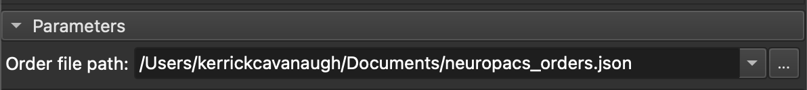
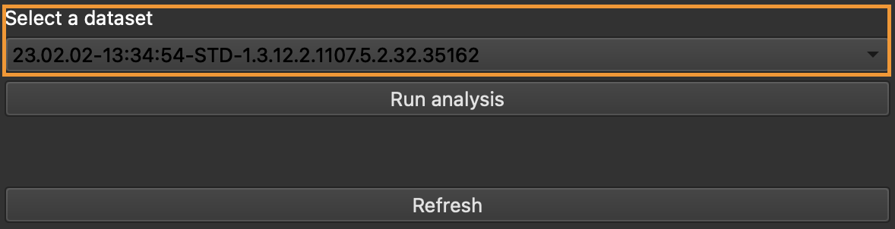
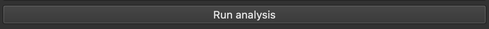
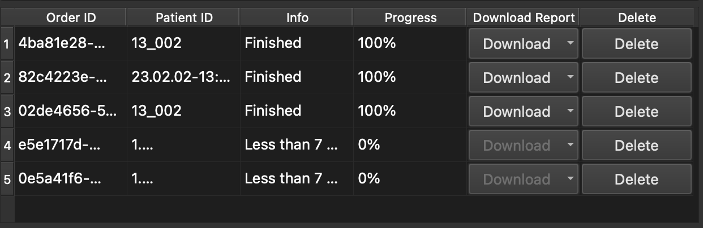
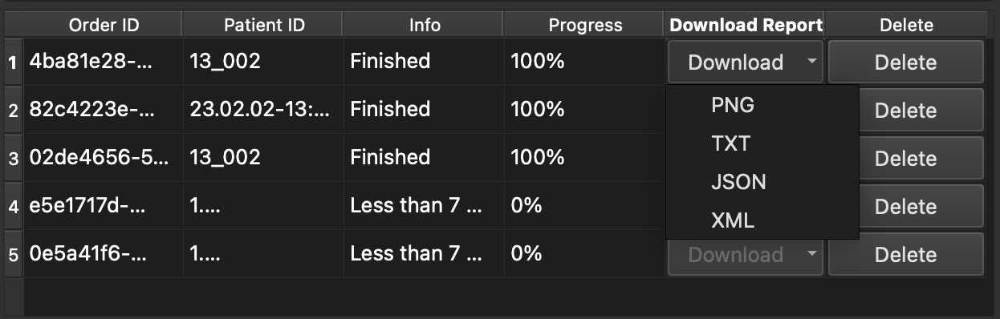
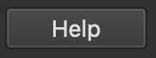

Overview
The neuropacs™ system is a software application intended to receive and analyze diffusion MRI data from patients aged 40 years and older presenting with Parkinson's disease (PD) symptoms. The neuropacs™ system provides a report to aid neuroradiologists and/or neurologists in identifying patients with Atypical Parkinsonism (i.e., multiple system atrophy Parkinsonian variant (MSAp), or progressive supranuclear palsy (PSP)). The results of the neuropacs™ system are intended to provide supplemental information in conjunction with a standard neurological assessment and other clinical tests. Patient management decisions should not be made solely on the basis of analysis by the neuropacs™ system.

Modules
- Parkinsonism Differentiation
Module for identifying patients with Atypical Parkinsonism (i.e., multiple system atrophy Parkinsonian variant (MSAp), or progressive supranuclear palsy (PSP)).
Usage
- Acquire an API key.
Fill out the form located at the bottom of the neuropacs™ website to request more information.
- Select a path to store the neuropacs™ order file (defaults to "Documents" folder).
This file keeps track of existing orders so orders persist between sessions. You will only need to choose this path once.
 - Select the "Parkinsonism Differentiation" Module.
Modules -> Diffusion -> Parkinsonism Differentiation
- Validate your API key.
Enter your API key in the input and select "Validate". This will initialize a session with neuropacs™ and activate the extension functions in 3D Slicer.
- Upload a DICOM dataset.
For information on uploading DICOM datasets, visit 3D Slicer documentation.
- Choose desired dataset from the dropdown list.
Press "Refresh" if the dataset does not appear initially.
 - Select "Run analysis" button to begin the neuropacs™ process.
This will upload the dataset to neuropacs™ and initiate the order execution. This process may take a few minutes.
 - View analysis progress and results in the table view.
The table has the following sections: "Order ID" (neuropacs™ order identifier), "Patient ID" (directory within the datasets where DICOM images are located), "Info" (textual information on status of order), "Progress" (percentage complete), "Download Report" (download the final result report), "Delete" (remove the order from the table).
 - Download the final report.
Once a order is completed, you have the option to download the final result report in PNG, TXT, JSON, or XML format. After a selection is made, a viewer will open in a Slicer viewer window.
 - Select "Help" button for more information on neuropacs™.
This will open a PDF through your default PDF viewer.

Publications
Advanced diffusion imaging to track progression in Parkinson's disease, multiple system atrophy, and progressive supranuclear palsyContact
Kerrick Cavanaugh (Lead Software Engineer) - kerrick@neuropacs.com
License
This project is licensed under the MIT.
Explore
Integrations
Explore the different systems and software that our product integrates with. Click each integration for detailed setup and usage instructions.
Supported Programming Languages
Our product supports various programming languages to offer flexibility in development. Click each language for APIs, libraries, and examples.